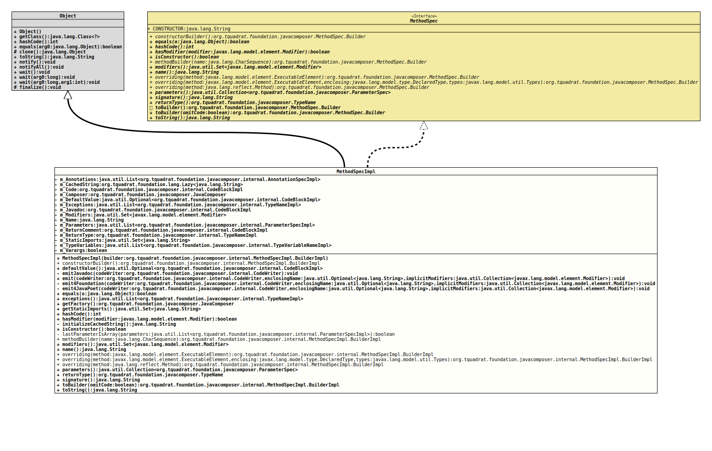

Class MethodSpecImpl
- All Implemented Interfaces:
MethodSpec
MethodSpec.- Author:
- Square,Inc.
- Modified by:
- Thomas Thrien (thomas.thrien@tquadrat.org)
- Version:
- $Id: MethodSpecImpl.java 943 2021-12-21 01:34:32Z tquadrat $
- Since:
- 0.0.5
- UML Diagram
-

UML Diagram for "org.tquadrat.foundation.javacomposer.internal.MethodSpecImpl"
{kind=link}
-
Nested Class Summary
Nested ClassesNested classes/interfaces inherited from interface org.tquadrat.foundation.javacomposer.MethodSpec
MethodSpec.Builder -
Field Summary
FieldsModifier and TypeFieldDescriptionprivate final List<AnnotationSpecImpl>The annotations of this method.private final org.tquadrat.foundation.lang.Lazy<String>Lazily initialised return value oftoString()for this instance.private final CodeBlockImplThe code of this method.private final JavaComposerThe reference to the factory.private final Optional<CodeBlockImpl>The default value of this method; only applicable for annotations.private final List<TypeNameImpl>The declared exceptions for this method.private final CodeBlockImplThe Javadoc comment of this method.The modifiers of this method.private final StringThe name of this method.private final List<ParameterSpecImpl>The parameters of this method.private final CodeBlockImplThe comment for the return value of the method.private final TypeNameImplThe return type of the method.The static imports.private final List<TypeVariableNameImpl>The type variables of this method.private final booleanThe flag that indicates whether a parameter (the last one) is avarargsparameter.Fields inherited from interface org.tquadrat.foundation.javacomposer.MethodSpec
CONSTRUCTOR -
Constructor Summary
ConstructorsConstructorDescriptionMethodSpecImpl(MethodSpecImpl.BuilderImpl builder) Creates a newMethodSpecImplinstance. -
Method Summary
Modifier and TypeMethodDescriptionstatic final MethodSpecImpl.BuilderImplDeprecated, for removal: This API element is subject to removal in a future version.final Optional<CodeBlockImpl>Returns the default value of this method.final voidemit(CodeWriter codeWriter, Optional<String> enclosingName, Collection<Modifier> implicitModifiers) Emits this method to the given code writer.private final voidemit4Foundation(CodeWriter codeWriter, Optional<String> enclosingName, Collection<Modifier> implicitModifiers) Emits this method to the given code writer, using the Foundation layout.private final voidemit4JavaPoet(CodeWriter codeWriter, Optional<String> enclosingName, Collection<Modifier> implicitModifiers) Emits this method to the given code writer, using the JavaPoet layout.private final voidemitJavadoc(CodeWriter codeWriter) Emits the Javadoc to the given code writer.final booleanfinal List<TypeNameImpl>Returns the declared exceptions for this method.final JavaComposerReturns theJavaComposerfactory.Returns the static imports for this code block.final inthashCode()final booleanhasModifier(Modifier modifier) Checks whether the method has the given modifier.private final StringThe initializer form_CachedString.final booleanChecks whether this method is a constructor.private static final booleanlastParameterIsArray(List<ParameterSpecImpl> parameters) Checks whether the last entry of the given parameter list is an array.static final MethodSpecImpl.BuilderImplmethodBuilder(CharSequence name) Deprecated, for removal: This API element is subject to removal in a future version.Got obsolete with the introduction ofJavaComposer.Returns the modifiers of this method.final Stringname()Returns the name of this method.static final MethodSpecImpl.BuilderImploverriding(Method method) Deprecated, for removal: This API element is subject to removal in a future version.Got obsolete with the introduction ofJavaComposer.static final MethodSpecImpl.BuilderImploverriding(ExecutableElement method) Deprecated, for removal: This API element is subject to removal in a future version.Got obsolete with the introduction ofJavaComposer.static final MethodSpecImpl.BuilderImploverriding(ExecutableElement method, DeclaredType enclosing, Types types) Deprecated, for removal: This API element is subject to removal in a future version.Got obsolete with the introduction ofJavaComposer.final Collection<ParameterSpec>Returns the parameters for the this method.final TypeNameReturn the return type for this method.final StringReturns the signature for this method.toBuilder(boolean omitCode) Returns a builder that is initialised with all the components of this method, like the result of a call toMethodSpec.toBuilder(), but without the body code, if specified that way.final StringtoString()Methods inherited from class java.lang.Object
clone, finalize, getClass, notify, notifyAll, wait, wait, waitMethods inherited from interface org.tquadrat.foundation.javacomposer.MethodSpec
toBuilder
-
Field Details
-
m_Annotations
The annotations of this method. -
m_CachedString
Lazily initialised return value oftoString()for this instance. -
m_Code
The code of this method. -
m_Composer
The reference to the factory. -
m_DefaultValue
The default value of this method; only applicable for annotations. -
m_Exceptions
The declared exceptions for this method. -
m_Javadoc
The Javadoc comment of this method. -
m_Modifiers
The modifiers of this method. -
m_Name
The name of this method. -
m_Parameters
The parameters of this method. -
m_ReturnComment
The comment for the return value of the method. -
m_ReturnType
The return type of the method. -
m_StaticImports
The static imports. -
m_TypeVariables
The type variables of this method. -
m_Varargs
The flag that indicates whether a parameter (the last one) is avarargsparameter.
-
-
Constructor Details
-
MethodSpecImpl
Creates a newMethodSpecImplinstance.- Parameters:
builder- The builder.
-
-
Method Details
-
constructorBuilder
@Deprecated(since="0.2.0", forRemoval=true) @API(status=DEPRECATED, since="0.0.5") public static final MethodSpecImpl.BuilderImpl constructorBuilder()Deprecated, for removal: This API element is subject to removal in a future version.Got obsolete with the introduction ofJavaComposer.Creates a builder that builds an instance ofMethodSpecfor a constructor.- Returns:
- The builder.
-
defaultValue
Returns the default value of this method.- Returns:
- An instance of
Optionalthat holds the default value.
-
emitJavadoc
Emits the Javadoc to the given code writer.- Parameters:
codeWriter- The code writer.- Throws:
UncheckedIOException- A problem occurred when writing to the output target.
-
emit
public final void emit(CodeWriter codeWriter, Optional<String> enclosingName, Collection<Modifier> implicitModifiers) throws UncheckedIOException Emits this method to the given code writer.- Parameters:
codeWriter- The code writer.enclosingName- The name of the type that owns this method.implicitModifiers- The implicit modifiers for this method.- Throws:
UncheckedIOException- A problem occurred when writing to the output target.
-
emit4Foundation
private final void emit4Foundation(CodeWriter codeWriter, Optional<String> enclosingName, Collection<Modifier> implicitModifiers) throws UncheckedIOException Emits this method to the given code writer, using the Foundation layout.- Parameters:
codeWriter- The code writer.enclosingName- The name of the type that owns this method.implicitModifiers- The implicit modifiers for this method.- Throws:
UncheckedIOException- A problem occurred when writing to the output target.
-
emit4JavaPoet
private final void emit4JavaPoet(CodeWriter codeWriter, Optional<String> enclosingName, Collection<Modifier> implicitModifiers) throws UncheckedIOException Emits this method to the given code writer, using the JavaPoet layout.- Parameters:
codeWriter- The code writer.enclosingName- The name of the type that owns this method.implicitModifiers- The implicit modifiers for this method.- Throws:
UncheckedIOException- A problem occurred when writing to the output target.
-
equals
- Specified by:
equalsin interfaceMethodSpec- Overrides:
equalsin classObject
-
exceptions
Returns the declared exceptions for this method.- Returns:
- The declared exceptions.
-
getFactory
Returns theJavaComposerfactory.- Returns:
- The reference to the factory.
-
getStaticImports
Returns the static imports for this code block.- Returns:
- The static imports.
-
hashCode
- Specified by:
hashCodein interfaceMethodSpec- Overrides:
hashCodein classObject
-
hasModifier
Checks whether the method has the given modifier.- Specified by:
hasModifierin interfaceMethodSpec- Parameters:
modifier- The modifier.- Returns:
trueif the given modifier has been applied to this method,falseotherwise.
-
initializeCachedString
The initializer form_CachedString.- Returns:
- The return value for
toString().
-
isConstructor
Checks whether this method is a constructor.- Specified by:
isConstructorin interfaceMethodSpec- Returns:
trueif the method is a constructor,falseif it is a regular method.
-
lastParameterIsArray
Checks whether the last entry of the given parameter list is an array.- Parameters:
parameters- The parameter list.- Returns:
trueif the last entry of the given parameter list is an array type,falseif not.
-
methodBuilder
@Deprecated(since="0.2.0", forRemoval=true) @API(status=DEPRECATED, since="0.0.5") public static final MethodSpecImpl.BuilderImpl methodBuilder(CharSequence name) Deprecated, for removal: This API element is subject to removal in a future version.Got obsolete with the introduction ofJavaComposer.Returns a builder for a regular method.- Parameters:
name- The name for the method.- Returns:
- The builder.
-
modifiers
Returns the modifiers of this method.- Specified by:
modifiersin interfaceMethodSpec- Returns:
- The modifiers.
-
name
Returns the name of this method.- Specified by:
namein interfaceMethodSpec- Returns:
- The name
-
overriding
@Deprecated(since="0.2.0", forRemoval=true) @API(status=DEPRECATED, since="0.0.5") public static final MethodSpecImpl.BuilderImpl overriding(ExecutableElement method) Deprecated, for removal: This API element is subject to removal in a future version.Got obsolete with the introduction ofJavaComposer.Returns a new method spec builder for a method that overrides the given method.
This new builder will copy visibility modifiers, type parameters, return type, name, parameters, and throws declarations. An
Overrideannotation will be added.- Note:
-
- In JavaPoet 1.2 through 1.7 this method retained annotations from the method and parameters of the overridden method. Since JavaPoet 1.8 and in JavaComposer annotations must be added separately.
- Parameters:
method- The method to override.- Returns:
- The builder.
-
overriding
@Deprecated(since="0.2.0", forRemoval=true) @API(status=DEPRECATED, since="0.0.5") public static final MethodSpecImpl.BuilderImpl overriding(ExecutableElement method, DeclaredType enclosing, Types types) Deprecated, for removal: This API element is subject to removal in a future version.Got obsolete with the introduction ofJavaComposer.Returns a new method spec builder that overrides the given method as a member of of the given enclosing class. This will resolve type parameters: for example overriding
Comparable.compareTo(T)in a type that implementsComparable<Movie>, theTparameter will be resolved toMovie.This will copy its visibility modifiers, type parameters, return type, name, parameters, and throws declarations. An
Overrideannotation will be added.- Note:
-
- In JavaPoet 1.2 through 1.7 this method retained annotations from the method and parameters of the overridden method. Since JavaPoet 1.8 and in JavaComposer annotations must be added separately.
- Parameters:
method- The method to override.enclosing- The enclosing class for the method.types- The type variables.- Returns:
- The builder.
-
overriding
@Deprecated(since="0.2.0", forRemoval=true) @API(status=DEPRECATED, since="0.0.8") public static final MethodSpecImpl.BuilderImpl overriding(Method method) Deprecated, for removal: This API element is subject to removal in a future version.Got obsolete with the introduction ofJavaComposer.Returns a new method spec builder for a method that overrides the given method.
This new builder will copy visibility modifiers, type parameters, return type, name, parameters, and throws declarations. An
Overrideannotation will be added, but any other annotation will be omitted; this is consistent with the behaviour ofoverriding(ExecutableElement)andoverriding(ExecutableElement, DeclaredType, Types).- Parameters:
method- The method to override.- Returns:
- The builder.
-
parameters
Returns the parameters for the this method.- Specified by:
parametersin interfaceMethodSpec- Returns:
- The parameters.
-
returnType
Return the return type for this method.- Specified by:
returnTypein interfaceMethodSpec- Returns:
- The return type; will never be
null, not even for a constructor.
-
signature
Returns the signature for this method.- Specified by:
signaturein interfaceMethodSpec- Returns:
- The signature.
-
toBuilder
Returns a builder that is initialised with all the components of this method, like the result of a call to
MethodSpec.toBuilder(), but without the body code, if specified that way.If the body is not copied, the method will be marked as
ABSTRACT, too.- Specified by:
toBuilderin interfaceMethodSpec- Parameters:
omitCode-trueif the body code should not be copied,falseotherwise; in the latter case, the result is the same as forMethodSpec.toBuilder().- Returns:
- The builder.
-
toString
- Specified by:
toStringin interfaceMethodSpec- Overrides:
toStringin classObject
-
JavaComposer.